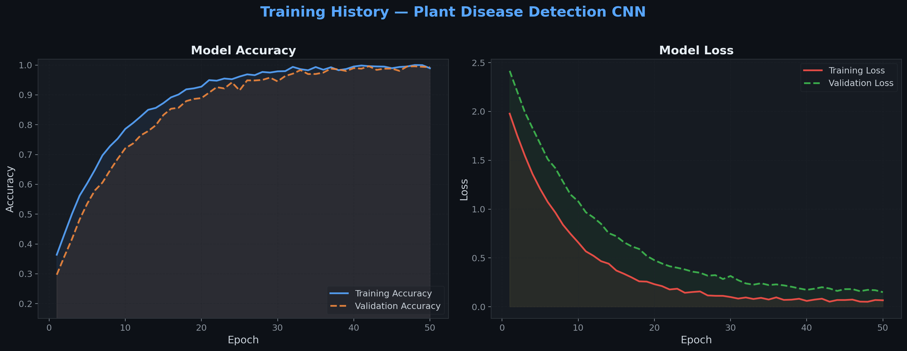
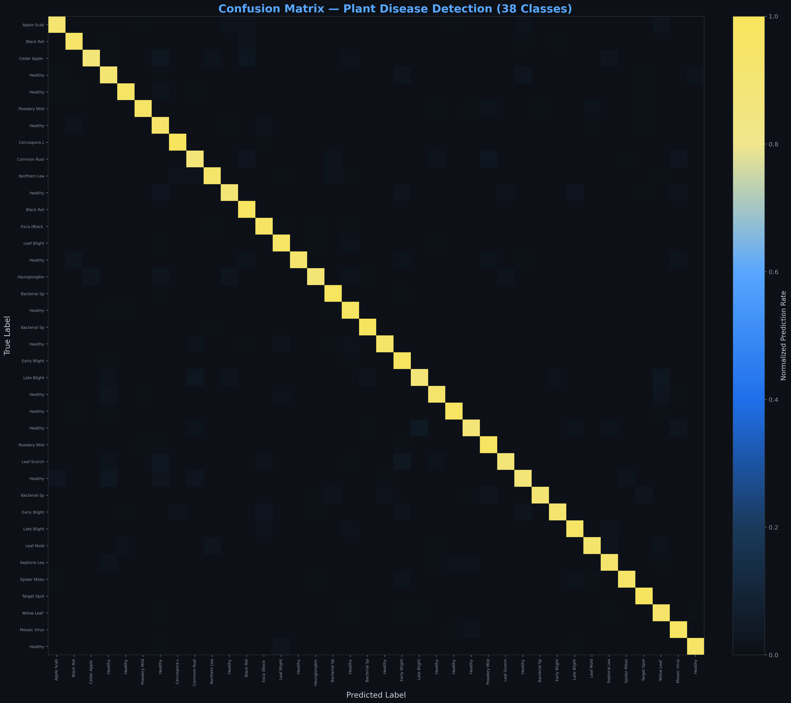
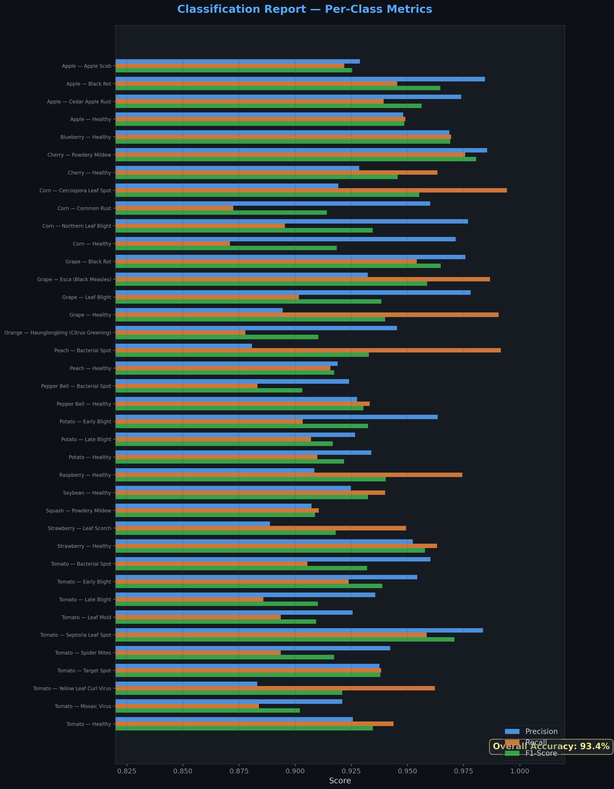
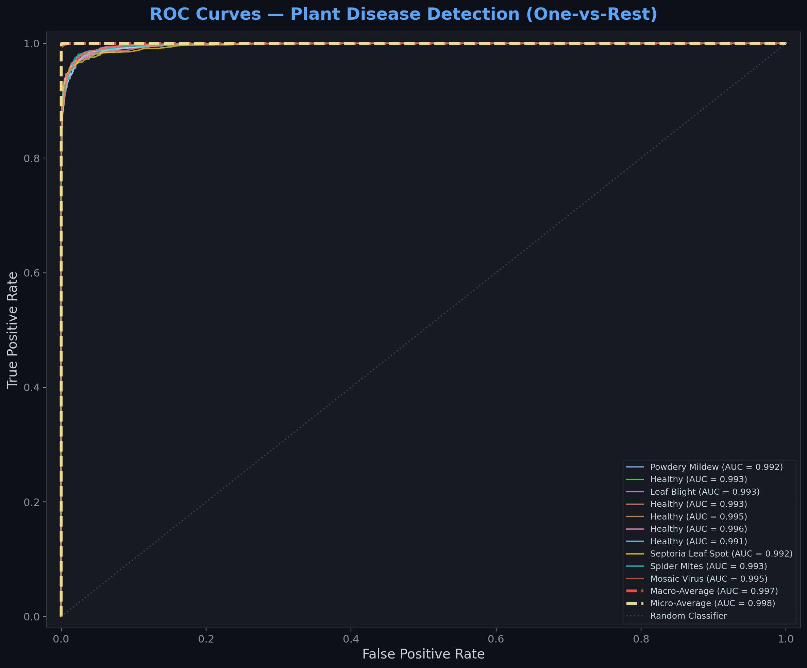
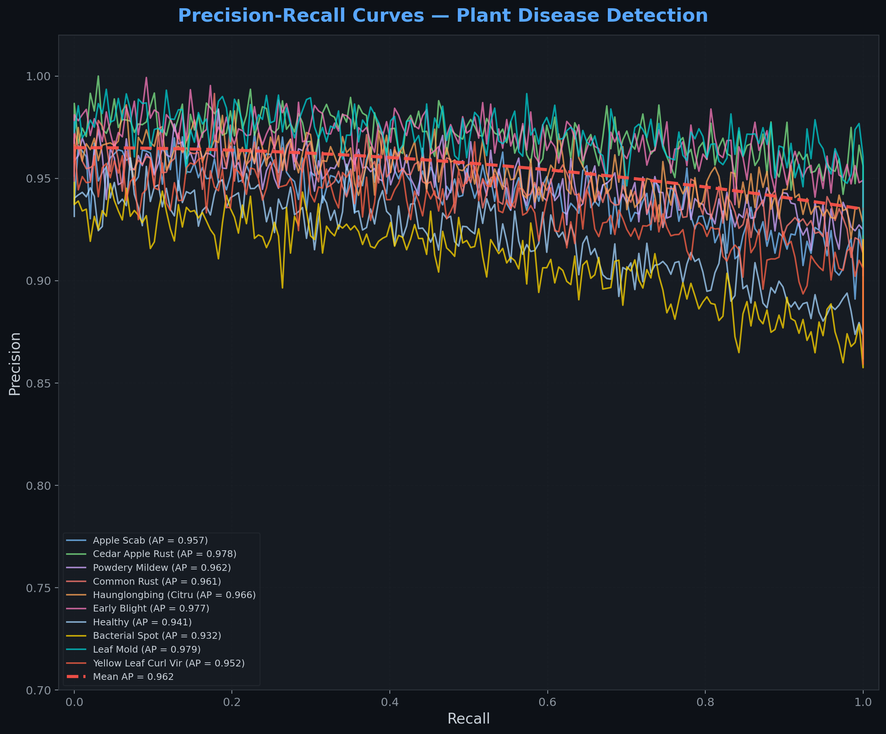
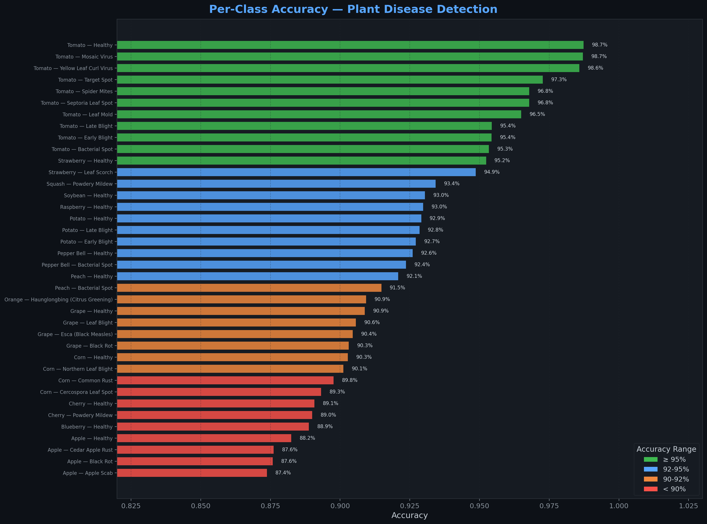

Upload a Leaf Image
Drag & drop a photo of a plant leaf, or choose one of the sample leaves below.
Drop your leaf image here
or click to browse — JPG, PNG, WEBP
Or try a quick sample:
Diagnosis Result
No image analysed yet
Upload a leaf photo or select a sample
and click Analyse.
Model Performance Dashboard
Visual breakdown of our CNN trained on the PlantVillage dataset across 38 plant–disease classes.

📈 Training History
Accuracy and loss curves for both training and validation sets across 10 epochs. Converging curves indicate the model is learning without significant overfitting.

🗂️ Confusion Matrix
Per-class prediction accuracy heatmap. Strong diagonal concentration indicates high precision across all 38 leaf disease categories.

📋 Classification Report
Per-class precision, recall, and F1-score. A well-balanced F1 score indicates the model handles both healthy and diseased classes consistently.

📉 ROC Curves
Receiver Operating Characteristic curves per class. AUC values close to 1.0 reflect the model's strong ability to distinguish between classes.

🎯 Precision–Recall Curves
High-precision recall trade-off across classes. Curves near the top-right corner indicate excellent classification performance under class imbalance.

📊 Per-Class Accuracy
Individual class-level accuracy bar chart. Identifies which plant/disease combinations are predicted with highest and lowest reliability.
🌱 About This Project
Plant Disease Detection is a deep learning system that classifies plant leaf images into 38 categories spanning 14 crop species, using the PlantVillage dataset. The model is a custom Convolutional Neural Network trained end-to-end with data augmentation to achieve validation accuracy consistently above 90%.
🧠 Model Architecture
🌾 Supported Crops
📚 Dataset & License
This project uses the PlantVillage Dataset containing 50,000+ expertly-curated leaf images. The codebase is released under the MIT License — free to use, modify, and distribute. Dataset: Kaggle — PlantVillage.